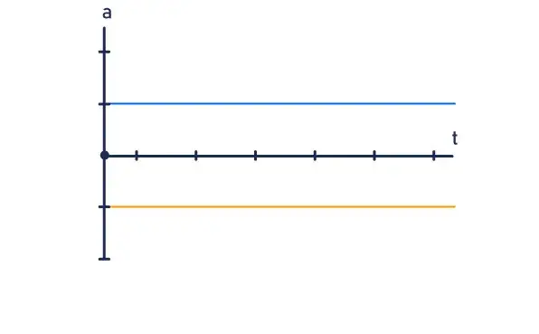
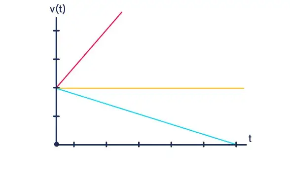
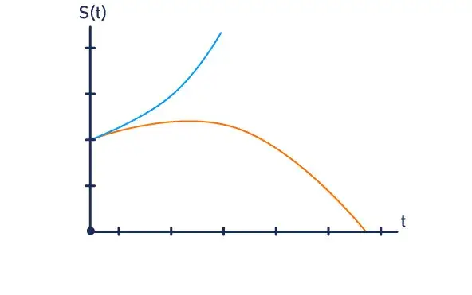

Movimento Uniformemente Variado
Movimento Uniformemente Variado (MUV) é aquele em que a velocidade de um corpo varia de forma constante ao longo do tempo. Isso significa que o objeto possui uma aceleração escalar constante e diferente de zero (a ≠ 0). Por exemplo, se um carro parte do repouso e sua velocidade aumenta exatamente 2 m/s a cada segundo, ele está em MUV com uma aceleração de 2 m/s².
Fórmulas Principais:
Para resolver qualquer problema de MUV, você utilizará uma das três equações fundamentais:
Função Horária da Velocidade:
V = V0 + a ⋅ t
Função Horária da Posição:
S(t) = S0 + v0 ⋅ t +
Equação de Torricelli:
V2 = V20 + 2 ⋅ a ΔS
Onde:
S / S0: Posição final e inicial (m)
V / V0: Velocidade final e inicial (m/s)
A: Aceleração (m/s²)
T: Tempo (s)
ΔS: Deslocamento ou distância percorrida (m)
Classificação do Movimento:
Quanto ao sentido do movimento:
Progressivo: O corpo caminha no sentido a favor da trajetória (v >0).
Retrógrado: O corpo caminha no sentido contrário ao da trajetória (v < 0).
Quanto à variação do módulo da velocidade:
Acelerado: O módulo da velocidade aumenta com o tempo (ocorre quando v e a têm o mesmo sinal).
Retardado: O módulo da velocidade diminui com o tempo (ocorre quando v e a têm sinais opostos).
Comportamento dos Gráficos:
Aceleração x Tempo (a × t): Como a aceleração é constante, o gráfico é uma linha reta horizontal (paralela ao eixo do tempo).

Velocidade x Tempo (v × t): Como a velocidade varia de forma linear (função de 1º grau), o gráfico é uma linha reta inclinada. A inclinação da reta indica se o movimento é acelerado ou retardado.

Posição x Tempo (s × t): Como a posição depende do tempo ao quadrado (função de 2º grau), o gráfico é uma parábola.
